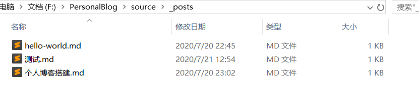

最近因为在本专业的老师那里进行实习，学习的东西很多，也十分有意义想要分享给大家，所以准备正式开始管理并更新我的博客！
就从 “如何搭建个人博客” 这一比较简单的文章开始写起吧，之后如果有时间会将我学习的东西整理出来！这里的搭建过程参考了 CodeSheep 的 b 站视频！十分感谢！鞠躬（大家快去关注大神）
本教程与其他热门教程不同点在于：
# 1. 安装依赖
Git: https://git-scm.com/downloads
Nodejs：https://nodejs.org/en/
安装结果如下：
之后还需要配置一下 nodejs 的环境，并且把依赖的存储空间从 C 盘改到其他的盘里，减少内存的压力，参考链接
创建两个文件夹：node_global node_cache，注意路径中不要有中文或空格
使用下面命令将 npm 的全局模块目录和缓存目录配置到我们刚才创建的那两个目录
w npm config set prefix "node_global 文件的路径"
npm config set cache "node_cache 的文件路径"
可以使用命令
npm config get prefix查看 prefix 路径是否已经正确修改随后配置环境变量，系统变量新建 NODE_PATH，路径为安装的 nodejs 中的 node_modules 文件夹（下载好的文件会存在此处）
用户变量在 PATH 变量中添加 node_global 文件的路径

优化速度：
我们呼出命令行，输入
npm install --g cnpm, 安装淘宝镜像。之后我们使用 npm 的时候，把命令中的npm替换成cnpm即可使用镜像下载，速度会快很多Hexo
命令行中输入
cnpm install --g hexo-cli, 等待下载完成，如果下载过程中出现 WARNING 可以忽略，不是 FATAL 就可以
# 2. 在 localhost 中查看博客
首先我们需要在本地中新建文件夹，这个文件夹用于存放个人博客所需的所有东西，用命令行新建文件夹并进入
w mkdir 文件夹名
cd 文件夹名
随后，输入命令
hexo init进行初始化，需要下载文件和依赖，所需时间比较长
最后的结果是在文件夹中生成了一系列的文件，文件夹内大致架构如下图
我们通过在命令行输入命令
hexo s启动服务器，在 localhost:4000 中查看当前博客的效果
停止预览在命令行 Ctrl+C 终止批处理操作即可
# 3. 书写新的博客文章
在命令行中写入
hexo n 文章名
根据终端返回的信息，来到相对路径 source/_posts 中，所有的文章都被收入进这里。我们发现新生成的以文章名命名的 md 文件，可用自己的 IDE 对.md 文件进行书写

个人使用的 IDE 为 VSCODE+Markdown Preview Github Styling 插件，快捷建 Ctrl+Shift+V 打开预览，预览实时更新，分页看很舒适
如果没有其他编程需求，可以使用 Typora，用过的人都说好
编写文件完毕后，通过在终端输入
hexo clean,hexo g命令生成博客
接着我们要将个人博客部署到 github 上，可以在上传之前依旧可以使用 hexo s 预览当前博客的效果
# 4. 部署到 Github 账户
首先，Github 账号登陆，创建 repository，注意仓库名字必须是
账号名.github.io创建完毕后复制 git 链接
在文件夹中打开_config.yml 进行部署（deploy）相关的配置


按下图进行配置即可，'repo' 处换成刚才复制的 git 链接，修改时注意冒号后面的空格一定要保留！！
保存配置文件，在命令行中输入命令
hexo d进行部署，并按要求输入 github 账户名及密码
出现 'Deploy Done' 字样，说明博客部署成功
在浏览器中输入
账号名.github.io，就可以访问我们之前改好的博客啦！鼓掌！
# 5. 管理博客
- 和之前的流程一样，在博客文件夹路径中就可以进行博客的更新啦，接下来讲讲如何更换博客风格，以大家力推的 yilia 为例
hexo n 文章名
// 修改.md 文件
hexo clean
hexo g
//hexo s
hexo d
# 6. 转换博客风格
yilia 官方 github 链接：https://github.com/litten/hexo-theme-yilia
里面官方例子可以仔细看看，因为有注解！很良心！不然一开始拿到可能会懵
按照 README，在博客文件夹中右键 ->Git Bash Here，输入命令
w git clone https://github.com/litten/hexo-theme-yilia.git themes/yilia
我的下载进度比较缓慢，可能要多等一会儿
下载完成后，在相对路径 /themes 中会出现 yilia 文件夹，其他主题也是用类似的方法下载到该路径中
接着我们再次对_config.yml 进行配置，更改 theme 的属性为 yilia
再次进行 clean、g、d 的操作，上传成功后刷新我们的博客网址，就可以发现风格变啦～
亲测风格改变的话加载时间会比较长，我也有出现上传了之后还是原来主题的情况，如果怀疑的话用
hexo s在本地测试一下，如果确定已经更改好页面了，剩下就是耐心等待吖
关于 yilia 主题的其他配置，这里直接给出推荐链接：https://www.jianshu.com/p/aa104ffdf045